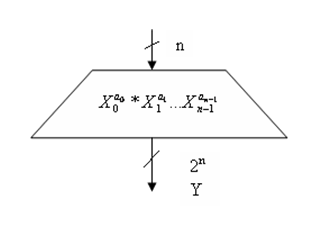
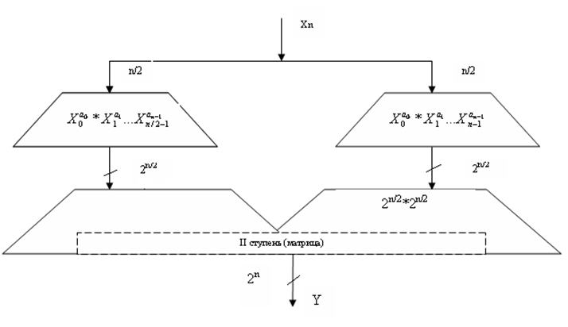
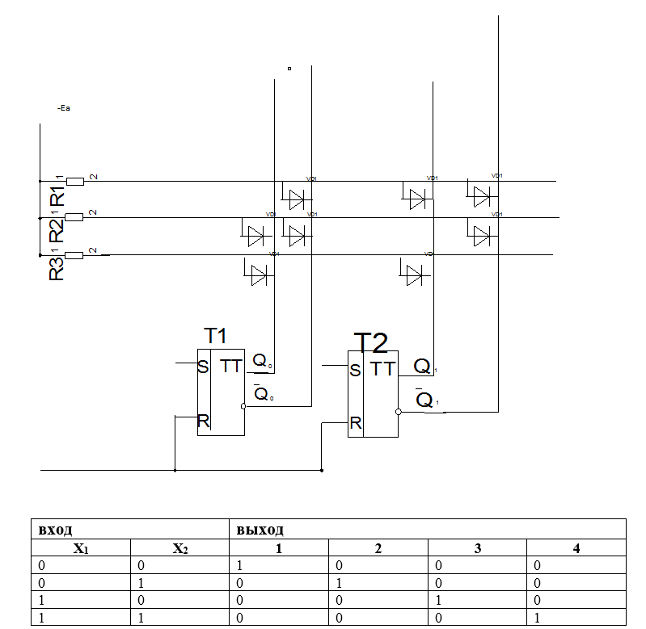
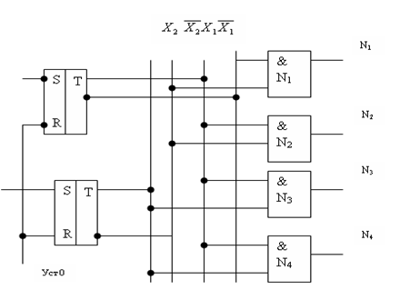
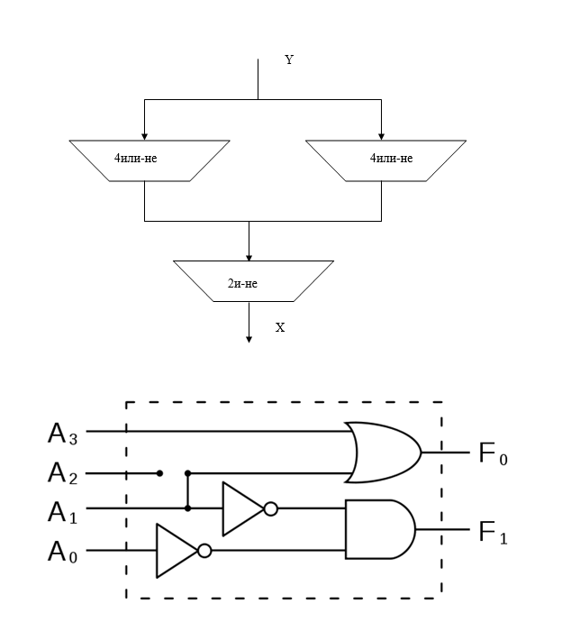
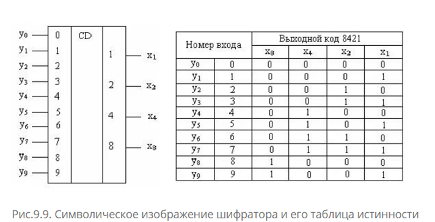
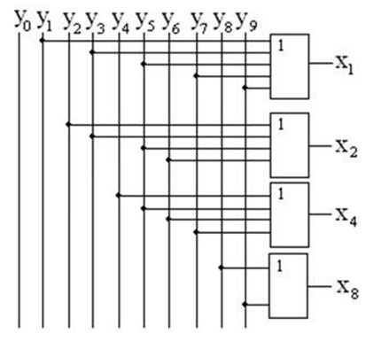

Шифраторы, Дешифраторы
Цель: изучение использование дешифраторов и шифраторов в современной ЭВМ.
План:
1. Общее понятия о дешифраторах и их назначение
2. Диодный дешифратор
3. Дешифратор на логических схемах
4. Цифраторы и их назначение
Общее понятие о дешифраторах и их назначение.
Дешифраторы(декодеры) Называется узел ЦВМ который преобразует двоичный код в управляющий сигнал.
Дешифратор операционный узел, выполняющий микрооперацию преобразования позиционного двоичного кода в унитарный цифровой код. Это узел, в котором каждой кодовой комбинации (каждому двоичному числу) на входах соответствует наличие сигнала на одном вполне определенном выходе.Иначе говоря дешифратор предназначен для преобразования информации, закодированной двоичным числом в управляющие сигналы. Команда на выполнение какой-либо операции в ЭВМ (кодируется) многоразрядным двоичным числом. Для реализации (выполнения) этот код необходимо преобразовать в сигналы, управляющие работой отдельных элементов, узлов и устройств ЭМВ. Эту задачу и решает дешифратор. Общем случае дешифратор имеющий n-входов имеет 2n выходов или можно сказать, что дешифратор называют полным, если число его выходов равно максимальному числу кодовых комбинаций на входе, т.е 2n.
Все выходы дешифратора для удобства работы с ним обозначают порядковым номером, соответствующим входной комбинации. Каждый выход дешифратора yi с помощью конъюнкции n входов фиксируют «свою» выходную кодовую комбинацию. Таким образом, дешифратор можно рассматривать как некую совокупность многовходовых схем <«И». Способ реализации конъюнкции определяет тип дешифратора. Объем аппаратуры дешифратора оценивается показателем М представляющим собой сумму произведений числа схем И на число входов этих схем.
М1=n*2n
В одноступенчатом дешифраторе конъюнкции непосредственно реализуется n – входом схемами «И»

В двух ступенчатом дешифраторе конъюнкции разбиваются на группы. Если конъюнкцию разбить на несколько вложенных групп, то она будет отражать структуру многоступенчатого дешифратора. Наибольшее, предельное число ступеней образуется при использовании дешифраторов, состоящих исключительно из двухвходовых схем «И» . Конъюнкция, отражающая структуру такого дешифратора для n=8, принимает вид
Yпр=[[x0 x1] [x2 x3]] [[x4 x5] [x6 x7]] αi= {
Дешифраторы с двумя позиционными униполярными кодами на входе, состоящее из двухвходовых схем «И», называют матрицами

Диодный дешифратор
Двоичный код в дешифраторах обычно записывается в регистре, а управляющий сигнал вырабатывается специальной избирательной схемой в диодных дешифраторах эта схема выполняется на диодах называемых диодной матрицей. В других схемах обычно используются логические элементы.
Диодная матрица позволяет в соответствии с двоичным кодом записанном в регистре может выработать управляющий единичный сигнал на одном выходе для каждого кода. Рассмотрим схему диодного одноступенчатого дешифратора на 2 входа

В схеме дешифратора регистр выполнен на 2-х триггерах в этом регистре можно записать следующий двоичные числа. Диодная матрица для каждого двоичного числа вырабатывает единичный сигнал только на одном выходе, чтобы схема нормально функционировала, необходим единичный сигнал, на любом выходе триггера должен превышать напряжение источника питания, а
U1вых>E U0вых>E
При выполнении перового требования в работе дешифратора наблюдаются следующие изменения Диоды, на которые подается 1(единица) оказываются закрытыми, а диоды, на катоды которых подается 0(ноль) оказываются открытыми. Что бы на выходе дешифратора был выработан 1(единичный сигнал) необходимо подключение к этому выходу других закрытых диодов. Если к выходу подключить хотя бы один открытый диод на этом выходе будет 0(нулевой сигнал).
В любых дешифраторах важным показателем в работе является отношение единичного сигнала на выходе дешифратора к нулевому, это отношение на выходе должно быть значительно больше единицы если выполняется это соотношение, то выход с 0сигналом будет контрастно выделяться на фоне единичного сигнала.
Дешифратор на логических схемах

Принцип работы
Пусть все триггеры дешифратора находятся в «0» состоянии.
Если единичный сигнал подать на первый триггер, а второй будет иметь «0» то на выходе второй шины будет единичный сигнал.
Рассмотренная схема является схемой линейного дешифратора.
В этой схеме число выходов определяет число входов, а число логических схем определяется формулой.
N=2n
Шифратор
Шифратор – комбинационная схема предназначенная для преобразования унитарного (однопозиционного) кода в двоичный позиционный. т. е шифраторы преобразуют униполярный 2n – позиционный в двоичный n- разрядный. Каждому действующему входу шифратора соответствует одна определенная кодовая комбинация на его выходах. Шифратор выполняет логические преобразования, противоположные преобразованиям дешифратора. Для удобства работы, так же как у дешифраторов, порядковые номера действующих входов шифратора соответствуют значения двоичных кодовых комбинаций на его выходе.
Шифратор — это комбинационное устройство, преобразующее десятичные числа в двоичную систему счисления, причем каждому входу может быть поставлено в соответствие десятичное число, а набор выходных логических сигналов соответствует определенному двоичному коду.
Шифратор иногда называют «кодером» (от англ. coder) и используют, например, для перевода десятичных чисел, набранных на клавиатуре кнопочного пульта управления, в двоичные.
Каждый вход шифратора формирует единичное или нулевое значение всех разрядов соответствующей выходной двоичной комбинации. Определенные значения двоичных разрядов (единичные или нулевые) на выходе соответствуют нескольким не одновременно действующим входам шифратора, поэтому их значения формируются по функциям «ИЛИ». Таким образом, основу шифратора составляют схемы ИЛИ и по аналогии с дешифраторами их можно определить как некую совокупность схем ИЛИ.
Типичным примером является шифратор клавиатуры для ввода в цифровое устройство шестнадцатеричного кода.
В отличие от дешифраторов шифраторы в цифровых устройствах в полном виде 2n практически не используются. Обычно для запоминания в регистрах или памяти формируются небольшое число кодовых комбинаций, поэтому шифраторы, как правило, не входят в состав серий интегральных микросхем.
По аналогии с дешифраторами дизъюнкцию можно реализовать путем чередования схем И-НЕ, ИЛИ-НЕ. Для одного и того же числа двоичных разрядов n схемы ИЛИ у шифраторов имеют большое число входов, чем схемы «И» у дешифраторов, поэтому шифраторы допускают структурную организацию с большим числом ступеней.

Двоичный шифратор
Двоичный шифратор выполняет преобразования унитарного n-ичного однозначного кода в двоичный. При подаче сигнала на один из n входов (обязательно на один, не более) на выходе появляется двоичный код номера активного входа.

Используя полученные логические операции, можно реализовать логическую схему шифратора, построенную на логических элементах ИЛИ, приведённую на рис.9.10. Шифраторы используются в устройствах ввода информации в цифровые системы с клавиатуры.
